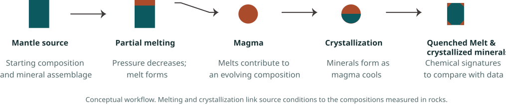
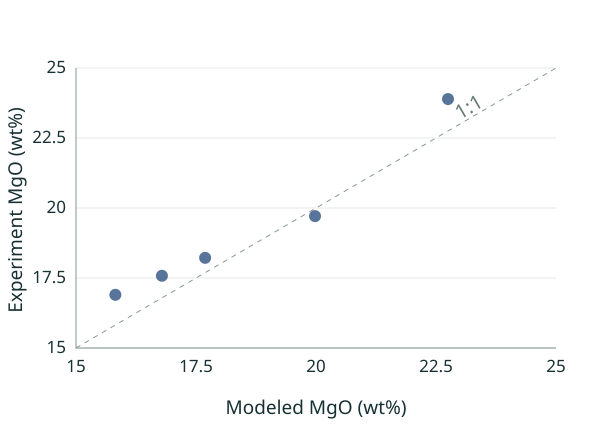
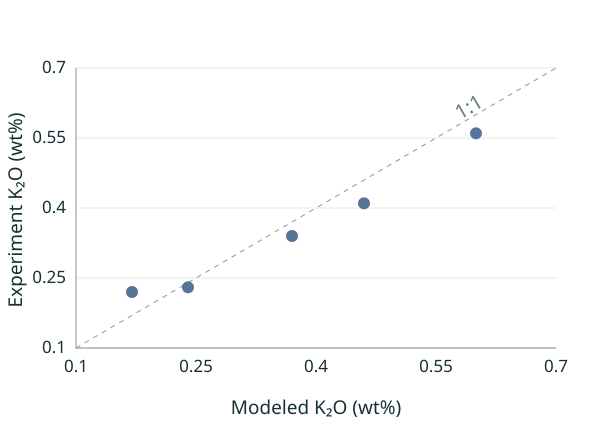
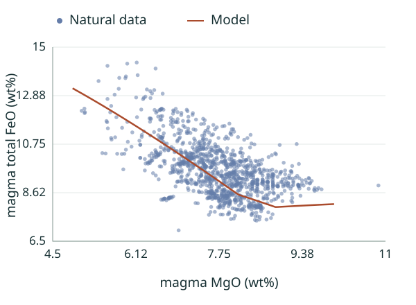
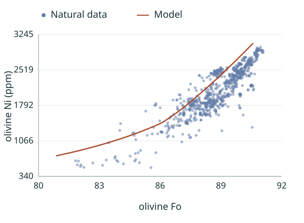
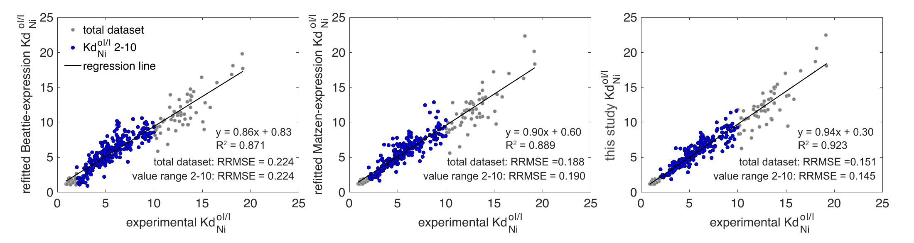

From rock chemistry to deep Earth processes
Mantle Melting and
Magma Crystallization
Modeling
Rock chemistry preserves evidence of processes deep within Earth. Numerical models connect that evidence to how magma forms, evolves, and leaves its chemical signature in minerals and volcanic glasses.
I implemented mantle melting modeling and extended an existing magma crystallization model in Python. I also developed a new nickel partitioning parameterization. Comparing predicted melt and mineral compositions with natural rock data helps constrain pressure, temperature, melt and crystal fractions, and source compositions for mantle activity. Together with geophysical and structural geological observations, these models can inform studies of mantle heterogeneity and recycling through Earth’s history, subsurface mineral and metal formation, and submarine hydrothermal systems. Such insights can also contribute to volcanic hazard assessment and eruption forecasting when integrated with other observations.
These melting and crystallization simulations support both forward and inverse modeling, depending on the research objective.
References: Yu & Langmuir (2023), Chemical Geology; Langmuir & Yu (2024), AGU; Langmuir, Klein & Plank (1992); Weaver & Langmuir (1990).
Original Python crystallization implementation: Jocelyn Fuentes. Melting implementation, crystallization extensions, and new Ni parameterization: Mingzhen Yu.
Python repository: melt_xtal on GitHub

Mantle melting modeling
Mantle melting is a decompression partial melting process. As mantle material rises, pressure decreases and a portion of the rock melts. Residual mineral proportions change with the melt fraction and the melting reactions. The behavior of each element depends on its partition coefficients between minerals and melt. I calculate these changes using the residual mantle column model of Langmuir, Klein, and Plank (1992). The model can simulate fractional and equilibrium melting under both polybaric and isobaric conditions.
Explore the melting method
Polybaric melting is calculated using the standard residual mantle column (RMC) model of Langmuir, Klein, and Plank (1992). The melt composition (CL) for each element is calculated using the mass balance relationships in Eq. m1:
Here C0 is the source composition, CS is the residual solid composition, F is the extent of melting, and D is the bulk partition coefficient. In the RMC model, F represents the pooled melt fraction of the melting column. The calculation first determines the instantaneous melt fraction (Finst) generated by each pressure decrement (Eq. m2a), then the accumulated melt fraction (Faccu) at a given pressure (Eq. m2b), and finally the pooled melt fraction relative to the system at that pressure (Eq. m2c):
if ,
if ,
Here Faccu and pressure (P) are the values from the previous step, with P expressed in kbar. The derivation of these equations is described in Langmuir, Klein, and Plank (1992).
Here n is the index of the current pressure-decrement step, and N is the total number of steps through the current step.
The bulk partition coefficients () for each element are calculated from the partition coefficients of the mantle silicate phases () and the phase proportions () during melting (Eqs. m3–m4).
Here is the mineral phase proportion at the previous step, and is its coefficient in the melting reaction. The melt compositions along the polybaric melting path are then calculated by combining Eqs. m1–m4.
An example of the polybaric fractional melting trajectory
Example settings: source composition: depleted mantle from Salters & Stracke (2004); initial mineral proportions: 52.5% olivine, 15% orthopyroxene, 25% clinopyroxene and 7.5% garnet; melting reactions: Walter (1998); starting pressure: 3 GPa.
Spinel forms through a garnet-to-spinel conversion reaction.
Animation will be available when the model data are added.
Schematic will update with the phase proportions.
Phase proportions versus melting degree.
Concentrations versus melting degree.
Concentrations versus melting degree.
Comparison with experimental data
Model results are compared with the 3 GPa isobaric equilibrium melting experiments of Walter (1998). The calculations use the same source compositions, initial mineral proportions, and melting reactions as the experiments.


Magma crystallization modeling
As magma rises and cools, minerals crystallize to form rocks, while the remaining melt may quench rapidly to form volcanic glass. Elements are redistributed between solid and liquid during crystallization. The calculation follows the fundamental mass balance equations used in the melting calculation. The central challenge is to find mineral proportions that conserve the bulk composition and satisfy mineral saturation. Following Weaver and Langmuir (1990), the model uses the Newton–Raphson method to adjust these proportions iteratively until both conditions are met. The model can simulate both fractional and equilibrium crystallization.
Explore the crystallization method
Melt and mineral compositions are also calculated using mass balance (Eq. m1). Here C0 is the primitive magma composition, CL is the remaining melt composition, and CS is the composition of the crystallized solid, which may contain several minerals. The remaining melt fraction, F, depends on the crystallized mineral fractions, Fa (Eq. c1). The crystallization degree is 1 − F.
The calculation seeks mineral proportions that conserve the bulk composition and leave the melt saturated with every mineral present. Following Weaver and Langmuir (1990), the calculation begins with an estimate of each mineral fraction (). These fractions and the mineral–melt distribution coefficients determine the melt composition through mass balance. A saturation residual () is then calculated for each mineral: a positive value indicates supersaturation, a negative value indicates undersaturation, and zero indicates saturation. The Newton–Raphson method adjusts the mineral fractions together by solving:
Here is the current saturation residual for mineral with a target value of zero; is the correction to the fraction of mineral ; and describes how changing the amount of mineral affects saturation with respect to mineral . The calculation repeatedly updates the phase compositions and mineral fractions until the mineral fractions stop changing appreciably and the saturation conditions are satisfied. At equilibrium, every mineral present satisfies = 0. All phase fractions, including the remaining melt, are nonnegative and sum to one. Once the melt and mineral proportions are known, their compositions are calculated from mass balance.
An example of the fractional crystallization trajectory
Example settings: source composition: synthetic parental basaltic magma; crystallization pressure: 1 atm.
Animation will be available when the model data are added.
Schematic will update with the phase proportions.
Phase proportions versus crystallization degree.
Concentrations versus crystallization degree.
Concentrations versus crystallization degree.
Comparison with natural data


The natural data are from Sobolev et al. (2005).
A new nickel partitioning parameterization
Partitioning describes how an element distributes between a mineral and the surrounding liquid. I developed a new parameterization for nickel between olivine and melt, connecting this relationship to the wider melting and crystallization calculations.
Here is the MgO partition coefficient between olivine (ol) and liquid; is temperature in kelvin; and is the SiO2 concentration in the liquid.
Compared with experimental values, the new Ni partitioning equation has a smaller relative root mean square error (RRMSE), a higher R2, a smaller intercept, and a slope closer to one than the widely used parameterizations of Beattie (1993) and Matzen et al. (2017).

Details of the experimental dataset and comparisons are provided in Yu & Langmuir (2023).
In our 2023 study, we used updated Ni partitioning to examine differences between Hawaiian and mid-ocean ridge olivines and their associated basalts. Considering minerals and liquids together provides a stronger test of the proposed source models. Yu & Langmuir (2023) ↗
About the Researcher
I am a PhD-trained quantitative geoscientist and Harvard postdoctoral researcher. My work combines geochemistry, scientific modeling, data analysis, and machine-learning techniques, when applicable, to investigate Earth processes and solve real-world problems.